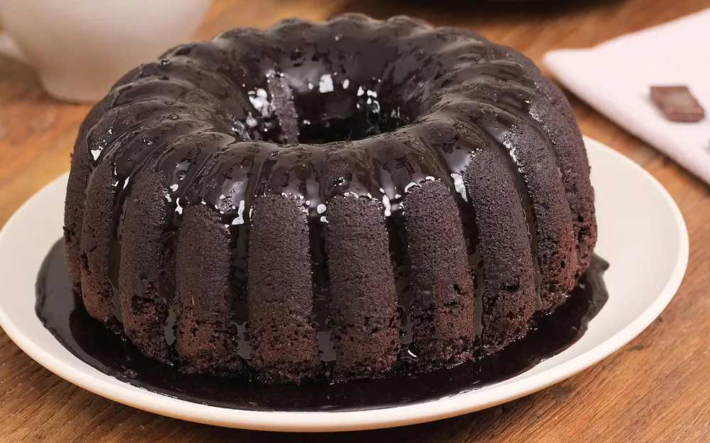

.webp)
O bolo de chocolate é um queridinho dos brasileiros. Clássico do lanche da tarde, esta receita fácil simples combina com um cafezinho. Para preparar a massa do bolo, você vai precisar de chocolate em pó, farinha de trigo, açúcar, ovos, fermento em pó e óleo. O bolo de chocolate fácil é finalizado com uma cobertura que deixa o bolo bastante molhadinho e saboroso. Saiba como preparar a receita! Massa 1/2 xícara(s) de óleo 3 unidade(s) ovo 1 1/2 xícara(s) de leite 2 xícara(s) de farinha de trigo 2 xícara(s) de açúcar 1 xícara(s) de chocolate em pó 1 colher(es) de sopa de fermento Cobertura 1 caixinha(s) de creme de leite 2 barra(s) de chocolate 1 - Em uma tigela, coloque 3 ovos, 1 e meia xícara de chá de açúcar, meia xícara de chá de óleo, 1 xícara de chá de chocolate em pó e 2 xícaras de chá de farinha de trigo. Misture delicadamente os ingredientes. 2 - Em seguida, adicione 1 xícara de chá de água quente, 1 colher de sopa de fermento em pó e bata até ficar homogêneo. 3 - Transfira a massa para uma forma untada e enfarinhada com uma mistura de farinha de trigo e chocolate em pó. Leve para assar em forno preaquecido a 180 graus Celsius por 40 minutos.
1 - Em uma panela, coloque 2 barrinhas de chocolate e 1 caixa de creme de leite, ligue o fogo e deixe ferver. 2 - Despeje a calda no bolo ainda quente e sirva em seguida.